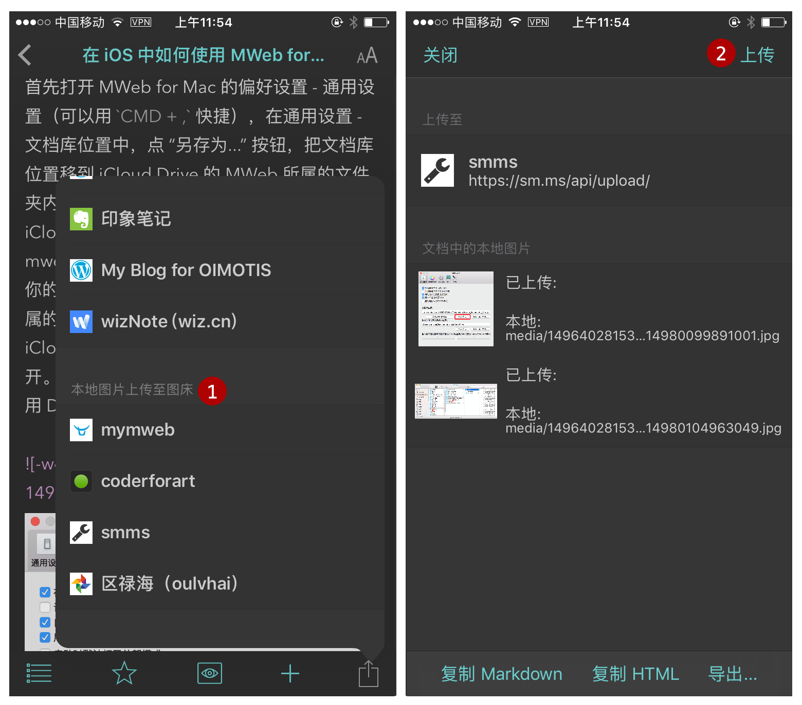

MWeb Mac 版和 iOS 版图片及图床使用完全指南
在 MWeb 中插入图片（不管你是拖拽插入还是粘贴插入，在下面都统一为插入图片）后，有二种处理方式，下面简单介绍一下。
1. 插入图片后自动上传至图床
这是很多朋友喜欢用，但是我不怎么建议用的方式，主要是万一图床挂了或者是什么问题，比较麻烦。这个方式只在外部模式中支持，文档库不支持，下面介绍一下配置方法。
MWeb for Mac 中的配置方法为：在外部模式中双击引入的文件夹（或者右键 - 编辑），这时出来如下图的文件夹设置界面。
勾选红框中的把插入的图片自动上传至...，然后选择要上传的图床即可（图床服务可以在偏好设置 - 发布服务中增加）。这样设置后，该引入的文件夹内的文档在插入图片时，会自动上传至所选择的图床并返回地址和生成 markdown 语法。
在 MWeb for iOS 中的配置方法为：在 iOS 版 MWeb 的网盘文档中，点击文件夹中的 (i) 按钮，则会出来文件夹设置，这个设置跟 Mac 版的外部模式一样。同样，启用自动上传插入的图片，然后选择图床即可，如下图。这样该文件夹内的文档在插入图片时，就会自动上传至选择好的图床了。

2. 插入图片后复制一份到文档所在的相对位置
这个是 MWeb 建议使用的方式，这个方式的好处是图片在本地并且跟 Markdown 文档相关联，不会造成图片丢失这种问题，MWeb 在编辑器中会直接显示本地图片，预览时也方便一点。MWeb 的文档库和外部模式都支持这种方式，下面介绍一下如何配置。
在 MWeb for Mac 中配置：
文档库不用配置，默认就是这样，外部模式中，同样双击引入的文件夹（或右键 - 编辑），调出文件夹设置界面，其中的配置如下图：
首先要取消勾选 “把插入的图片自动上传至”。上面的配置可以用默认的，也就是说你只要取消勾选自动上传图片即可。
上面也只有两个可设置的地方，一个是 “文件夹名称”，一个是 “保存位置”，保存位置有两种设置，一种是 “相对位置”，另一种是 “绝对位置”。
这里举个例子说明一下，比如说引入的文件夹为 folder，在 folder/sub/sub2/sub3/doc.md 这个位置的文档插入图片，如果是 “绝对位置”，图片会保存在 fodler/media 下，生成的 markdown 为 ；而 “相对位置”，则会保存在 folder/sub/sub2/sub3/media 下，生成的 markdown 为 。“绝对位置” 这个设置其实是为了支持 Hexo、Octpress、Jekyll 等静态博客的 markdown 文档能文件用 MWeb 编辑。
大家或者看出来了，也就是一般情况下不用配置，除非是 Hexo、Jekyll 等静态博客的 markdown 文档，或者是想要自动上传到图床。
在 MWeb for iOS 中的配置：
配置方法跟 Mac 版是一样的，想必不用多说，只要在 iOS 版的网盘文档中，调出文件夹设置即可配置。
把文档中的本地图片上传至图床
为什么推荐使用第二种插入后图片处理方式，就是因为有这个功能。使用方法非常简单，在 Mac 版中点 “分享” 按钮 - 把本地图片传至图床，或者菜单：发布 - 把本地图片传至图床 即可调出以下的图片上传面板：

在这个面板中，中间的列表会列出文档中的所有本地图片（注意是文档中的），首先请选择要上传的图床，然后点 “上传本地图片” 按钮即可。当图片上传完成后，你可以选择使用 “复制 Markdown” 按钮或者 “复制 HTML” 按钮，看你需要什么样的格式。复制进来的就是已经把本地图片地址换成图床的远程地址后的内容。
在 MWeb for iOS 中使用方法跟 Mac 一样，如下图：

至此已介绍完毕！